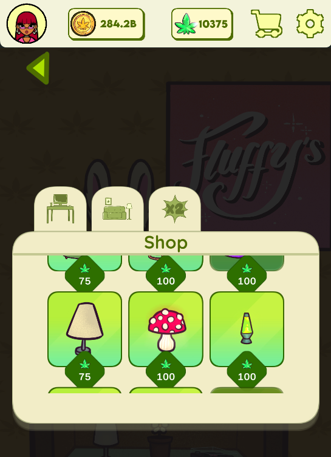
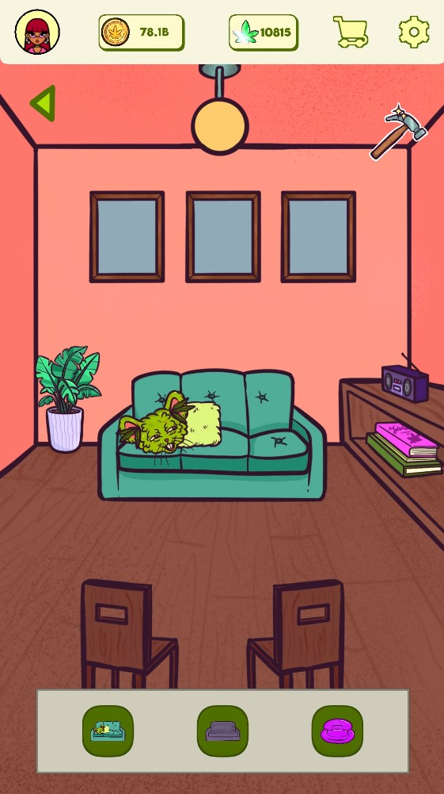
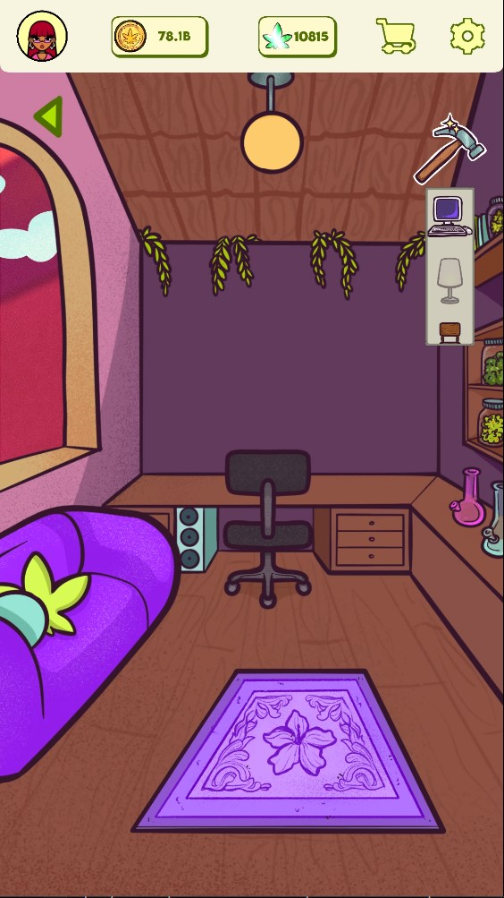
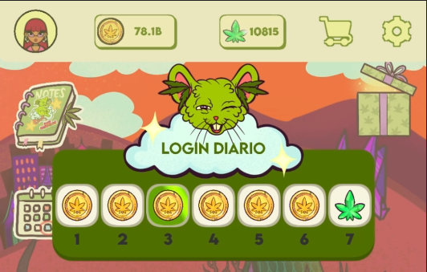
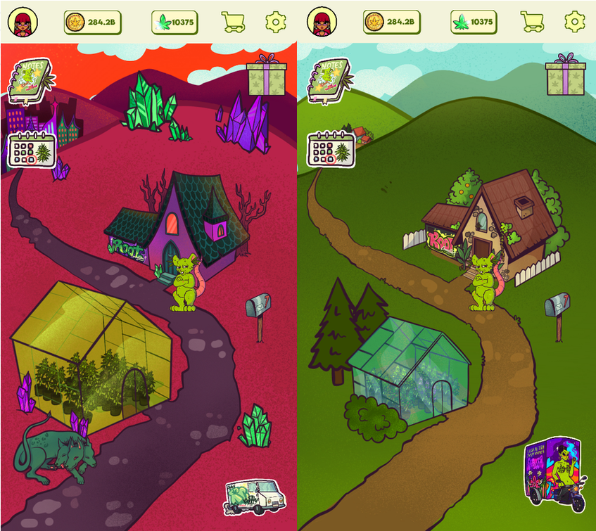
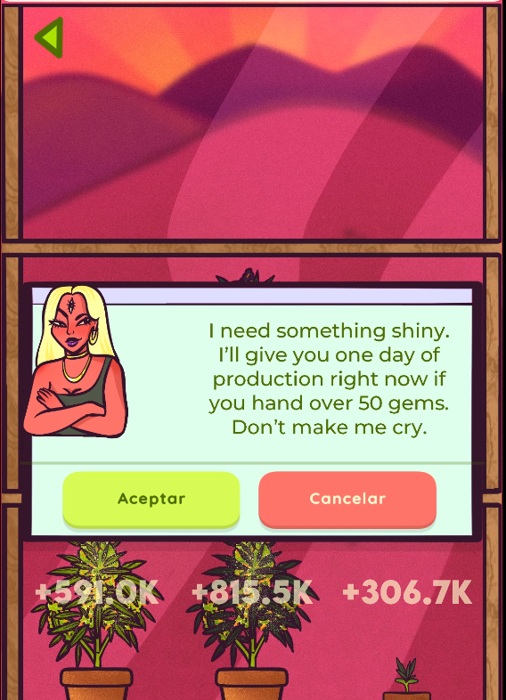
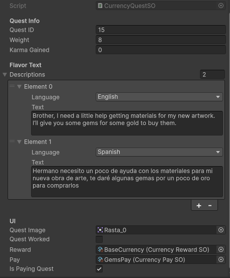
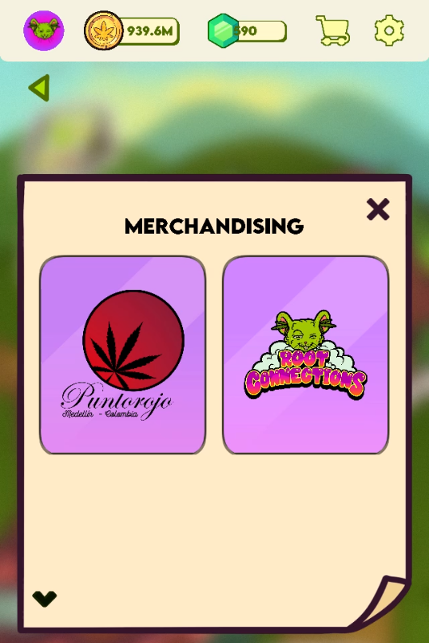

A peek at the housing system and skin selection UI I built from the ground up.
The Context
Root Connections is an idle mobile game. I joined the project after the initial launch to stabilize performance, improve user retention, and build out the monetization roadmap. The existing codebase had strong core loops but suffered from technical debt.
Performance Tuning: Firebase Call Optimization
The Issue: The game made a lot of individual Firebase calls on start-up and during UI transitions. This caused 2-3 second freezes on mid-tier devices and drained battery life.
What was done:
- Batch Aggregation: Merged small reads into single batched requests using strong fundamentals with custom prioritization.
- Caching Layer: Implemented an in-memory cache for player settings and some other data, reducing redundant calls.
Results:
- Boot time reduced.
- Firebase bandwidth usage dropped and freezes disappeared.
- Crash rate related to network timeouts or ads fell by 90% if not more.
Major Feature Deliveries
Beyond fixing the core, I designed and implemented the entire live-ops roadmap for the first 6 months post-launch.
Premium Currency System
Designed the economy backend (Soft vs. Hard currency) with Firebase Realtime Database transaction safety to prevent duplication exploits. Integrated with Unity IAP for store purchases.

Minimalist Housing and Skins
Built a reactive UI system where players can buy, preview, and apply cosmetic skins to their in-game "House". The housing system stores state locally and syncs to Firebase only on application, ensuring a snappy UI.


Daily Login (Firebase)
Implemented a 7-days reward system using Firebase Cloud Functions to track consecutive logins and server-side timestamps (preventing device time cheating). Used Scriptable objects to define rewards and UI elements, allowing for easy adjustments without code changes.


Cosmetic Ascension System
Designed a prestige-like loop that resets progress in exchange for a permanent "Ascension Level" and exclusive visual changes. Since it's purely cosmetic, I pushed through the "prestige" fantasy without changing the player's core progress. It's planned to become a part of the core loop of the progression of the game, but is for now on design.

Quests System
Implemented a dynamic quest system where players can choose some options to earn rewards. The system tracks progress and updates the UI in real-time, providing a sense of achievement and encouraging daily engagement.


Brand Advertisement
As a key part of the project we integrated custom brand advertisements seamlessly into the game experience, ensuring they were engaging without disrupting gameplay by blending them naturally with the game's aesthetics and mechanics.

Overall Impact
Key Takeaway: Taking over a live game wasn't just about adding new content—it's about stabilizing the foundations so players actually enjoy that content. This project taught me to balance technical debt reduction with rapid feature delivery. And how painful the debt becomes over time.